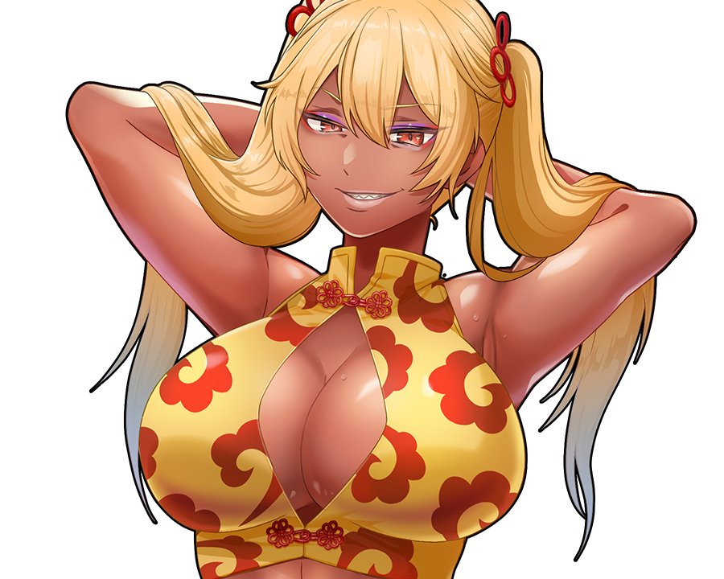
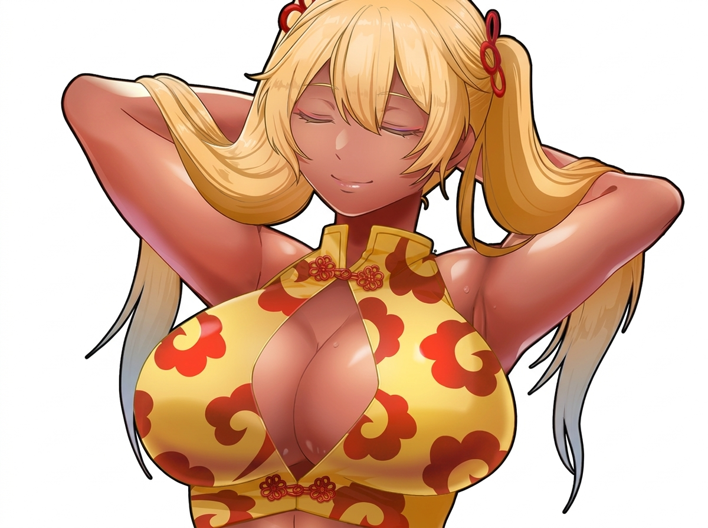

Edit the reference image: make the character close her eyes peacefully as if sleeping, keep everything else (face, hair, outfit, pose, art style, framing, white background) exactly the same.

失敗: HTTP 400: { "error": { "message": "Your request was rejected by the safety system. If you believe this is an error, contact us at help.openai.com and include the request ID req_f50235c9bab04bf294a482399f005234. safety_violations=[sexual].", "type": "image_generation_user_error", "param": null, "code": "moderation_blocked", "moderation_details": { "moderation_stage": "output", "categories": [ "sexual" ] } } }
